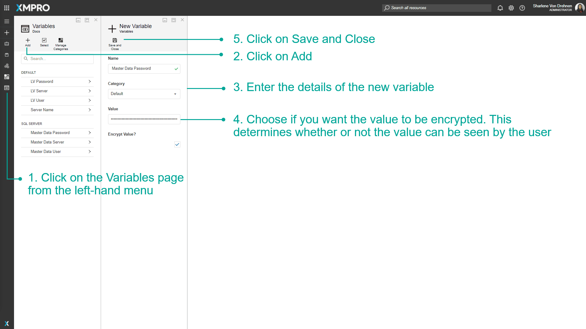
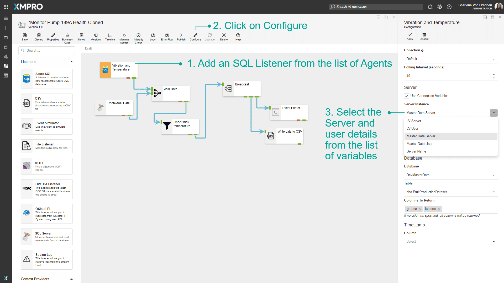
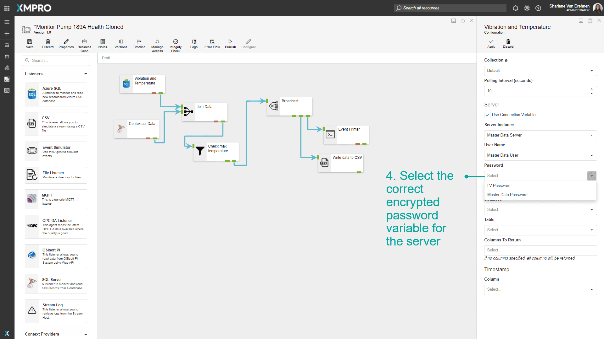
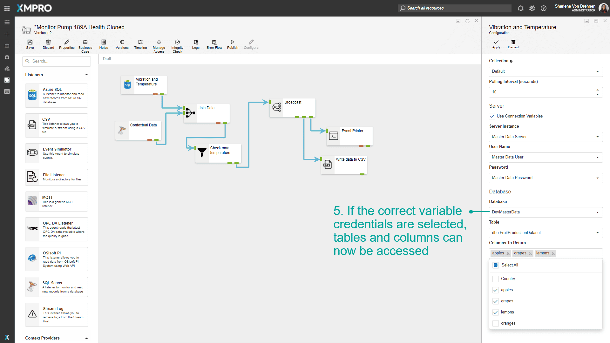

Manage Variables
XMPro Variables are placeholders used to hold and maintain certain values. If you may not know some of the values that you might want to use within an XMPro Object, such as credentials or passwords, you can use Variables where the real value can be substituted later.
Note
It is recommended that you read the article listed below to improve your understanding of Variables.
Adding a new Variable
Variables can be added via the Variables page before being used in any of the Data Streams or Applications.
- Click on the Variables page from the left-hand menu.
- Click on Add.
- Enter the details of the new Variable.
- Choose if the value is encrypted. This determines whether or not the value can be seen by the user.
- Click on Save and Close.

Using Variables
Variables can be used in Data Streams or Applications to authenticate users or to access certain data sources. Consider having the following agents in a stream:
- Azure SQL Listener
When the Azure SQL Listener is configured the user needs to enter the server details and password in order to access the available tables and columns. In this case, variables that already store the passwords and credentials can be used in the input fields. For example:
- Add an SQL Listener from the list of Agents.
- Click on Configure.
- Select the Server and user details from the list of variables (ensure that the 'Use Connection Variables' option is selected).

4. Select the correct encrypted password variable for the server.

5. If selected correctly, tables and columns can now be accessed.

Removing Variables
Single Variable
To remove a single variable, follow the steps below:
- Open the Variables page from the left-hand menu.
- Select the variable from the list.
- Click Delete.

4. Confirm that you would like to delete the variable.

Multiple Variables
To remove multiple variables, follow the steps below:
- Open the Variables page from the left-hand menu.
- Click Select.
- Select the variables from the list.
- Click Delete.

5. Confirm that you would like to delete the selected variables.

Overriding Variables
The Variables defined can be overridden by the individual Stream Host to provide the unique configuration e.g. per Asset, site, or OPC IP Address. See How to Override Variables for more information.
Last modified: October 06, 2025